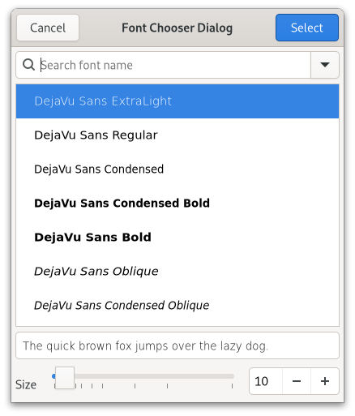

Gtk.FontChooserDialog¶
Example¶
- Subclasses
None
Methods¶
- Inherited
Gtk.Dialog (11), Gtk.Window (62), Gtk.Widget (181), GObject.Object (37), Gtk.Accessible (15), Gtk.Buildable (1), Gtk.Native (6), Gtk.Root (3), Gtk.FontChooser (19)
- Structs
class |
|
Virtual Methods¶
Properties¶
Signals¶
Fields¶
Class Details¶
- class Gtk.FontChooserDialog(*args, **kwargs)¶
- Bases
- Abstract
No
The
GtkFontChooserDialogwidget is a dialog for selecting a font.An example
Gtk.FontChooserDialogGtkFontChooserDialogimplements the [iface`Gtk`.FontChooser] interface and does not provide much API of its own.To create a
GtkFontChooserDialog, use [ctor`Gtk`.FontChooserDialog.new].The
GtkFontChooserDialogimplementation of theGtkBuildableinterface exposes the buttons with the names “select_button” and “cancel_button”.- CSS nodes
GtkFontChooserDialoghas a single CSS node with the namewindowand style class.fontchooser.Deprecated since version 4.10: Use [class`Gtk`.FontDialog] instead
- classmethod new(title, parent)[source]¶
- Parameters
parent (
Gtk.WindoworNone) – Transient parent of the dialog
- Returns
a new
GtkFontChooserDialog- Return type
Creates a new
GtkFontChooserDialog.Deprecated since version 4.10: Use [class`Gtk`.FontDialog] instead